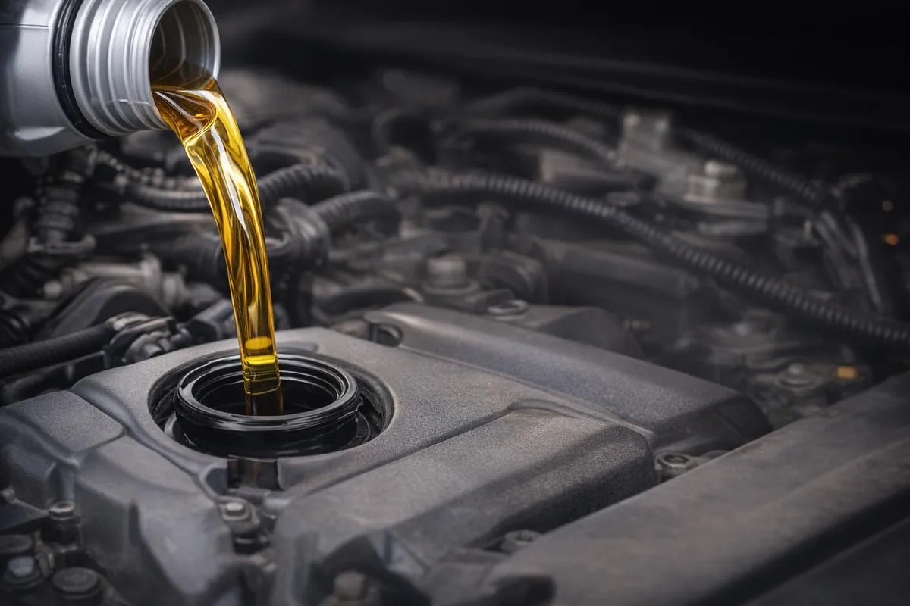
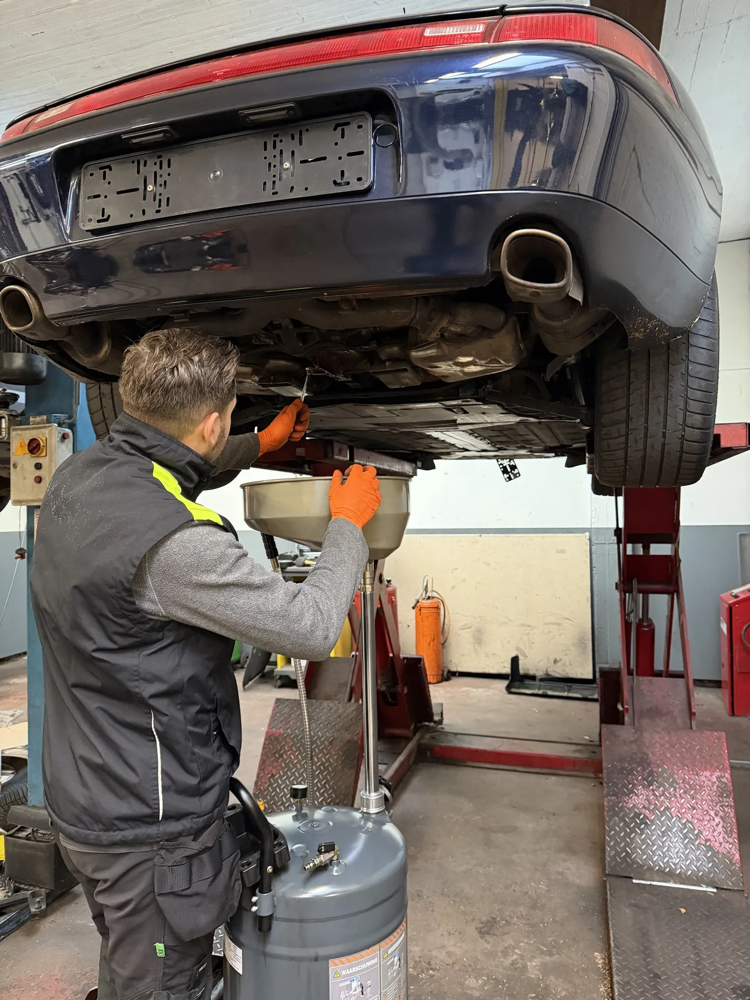
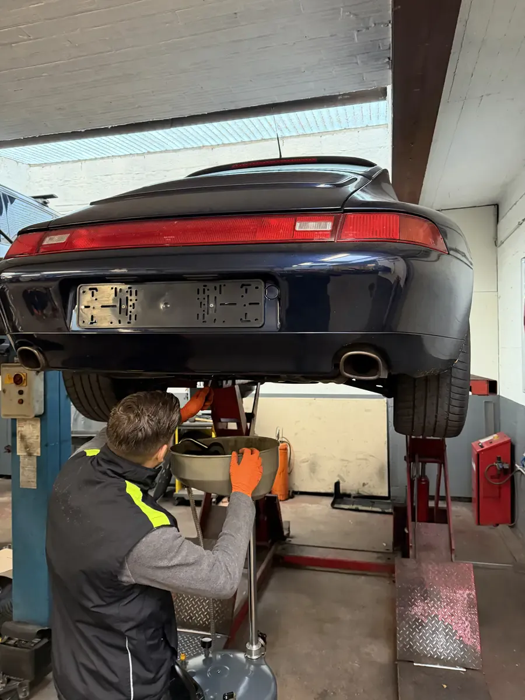
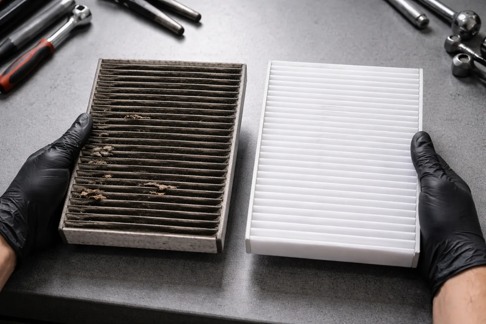

>De olieverversing is het eenvoudigste en belangrijkste onderhoud voor uw motor. Bij DMT AUTOGROUP in Zaventem gebruiken we kwaliteitsolie aangepast aan uw voertuig en vervangen we de filters. Het is klaar in minder dan een uur.
Onze olieverversing staat open voor iedereen — particulieren en professionals. Geen afspraak nodig, kom langs wanneer het u past.
Motorolie degradeert na verloop van tijd en kilometers. Als u te lang wacht, smeert de olie niet meer goed en slijt uw motor voortijdig. In de regel moet u een olieverversing laten doen om de 15.000 km of eenmaal per jaar, afhankelijk van wat het eerst komt.
Iets wat we vaak zien: bestuurders die 30.000 km rijden zonder olieverversing. Als ze binnenkomen, is de olie zwart als koffie. De motor lijdt in stilte.
Als u het interval overschrijdt, verliest de olie haar viscositeit. Metaaldeeltjes hopen zich op en beschadigen de interne onderdelen. Op de lange termijn kan het overslaan van een olieverversing leiden tot oververhitting, overmatig brandstofverbruik en zelfs een geblokkeerde motor.
Bij DMT AUTOGROUP verversen we uw motorolie en vervangen we deze door kwaliteitsolie — 5W30, 5W40, 0W20, volgens de specificaties van uw constructeur. Het verschil tussen synthetische olie en minerale olie is belangrijk. Synthetische olie gaat langer mee en beschermt beter bij hoge temperaturen. Minerale olie is geschikt voor oudere motoren met een hoge kilometerstand.
We zien mensen die 300 euro betalen voor een olieverversing bij de concessiehouder. Bij ons is het 100-150 euro afhankelijk van het model — dezelfde olie, hetzelfde filter.
Wij adviseren de juiste olie voor uw motor, niet de duurste. We werken op alle merken, van kleine diesels tot grote benzinemotoren. Terwijl uw auto op de brug staat, controleren we ook graag de staat van uw banden en adviseren we u als vervanging nodig is.


Het oliefilter vervangen we bij elke olieverversing — dat is automatisch bij ons. Waarom? Omdat nieuwe olie door een oud filter gieten hetzelfde is als proper water door een vuil filter laten lopen. Dat slaat nergens op.
Een verstopt oliefilter laat onzuiverheden door in de motor: metaaldeeltjes, verbrandingsresten, vuil. Die onzuiverheden krassen de cilinders en slijten de lagers. Het resultaat? Motorgeluid, vermogensverlies en uiteindelijk een dure panne.
Het oliefilter kost amper een paar euro. Het vervangen bij elke olieverversing is een kleine investering die grote kosten voor motorherstelling voorkomt. Bij DMT AUTOGROUP in Zaventem gebruiken we kwaliteitsfilters aangepast aan uw voertuig.

Het interieurfilter filtert de lucht die u inademt in uw auto. Pollen, stof, uitlaatgassen — vooral als u vaak rijdt op de E40 of in het verkeer rond de luchthaven van Zaventem, raakt dit filter snel verstopt.
Niemand denkt aan het interieurfilter. Maar als u hoest in de auto of de lucht muf ruikt wanneer u de verwarming aanzet, is dat vaak de boosdoener.
In België is het pollenseizoen tussen maart en juni bijzonder zwaar. Een vuil interieurfilter laat allergenen en fijnstof door in het interieur. We vervangen het in een paar minuten en u merkt het verschil meteen. De lucht in uw auto wordt weer fris en schoon. Dit is ook goed om te doen voor uw technische keuring.
Het brandstoffilter beschermt uw injectoren en inspuitpomp. Bij diesels is dit onderhoud dat je niet mag verwaarlozen — een verstopt filter kan vermogensverlies, haperingen en zelfs schade aan het injectiesysteem veroorzaken.
De symptomen van een vuil brandstoffilter zijn makkelijk te herkennen. Uw auto verliest vermogen bij het optrekken of op een helling. De motor draait onregelmatig in stationair. In ernstige gevallen slaat de motor af bij een rood licht of bij het starten.
Merkt u deze tekens? Kom dan snel langs — hoe langer u wacht, hoe erger de schade aan de injectoren wordt.
Bij DMT AUTOGROUP controleren we de staat van het brandstoffilter bij elk onderhoud en vervangen we het wanneer nodig. Bij moderne dieselvoertuigen bevat het brandstoffilter ook een waterafscheider die regelmatig moet worden leeggemaakt. Dat doen we tijdens de olieverversing.
Of u nu op diesel of benzine rijdt, we hebben het juiste filter op voorraad voor uw model. De inwoners van Zaventem, Diegem, Nossegem, Sterrebeek en Kraainem komen bij ons voor een compleet onderhoud in één beurt.
Twee jaar zonder olieverversing is te lang. De olie verliest haar smeereigenschappen ruim daarvoor al. Metaaldeeltjes hopen zich op en beginnen de interne onderdelen te beschadigen. Het beste is om snel langs te komen — we doen een volledige check: olie, filters, en we controleren de remmen terwijl we toch bezig zijn. Meestal volstaat een goede olieverversing met een nieuw filter om de zaak weer in orde te brengen.
Synthetische olie wordt in het laboratorium gemaakt. Ze is beter bestand tegen extreme temperaturen en gaat langer mee tussen twee olieversversingen. Minerale olie wordt gewonnen uit aardolie, is goedkoper, en is geschikt voor oudere motoren met veel kilometers. We adviseren de juiste olie op basis van uw motor en gebruik — niet de duurste, maar de juiste.
Bij een concessiehouder betaalt u al snel 300 euro voor een olieverversing. De werkuren en de marges op onderdelen drijven de factuur op. Bij ons kost een volledige olieverversing met oliefilter tussen 100 en 150 euro afhankelijk van het model. Dezelfde constructeurolie, hetzelfde kwaliteitsfilter. Bel 0484 11 58 13 voor een exacte offerte.
Het oliefilter, ja, dat is standaard bij elke olieverversing. Voor het luchtfilter, interieurfilter en brandstoffilter controleren we de staat en vertellen we u eerlijk of ze nu vervangen moeten worden of dat het nog kan wachten. We vervangen nooit een filter dat het niet nodig heeft. Het is ook een goed moment om meteen een voorcontrole voor de keuring te laten doen.
Tussen 30 en 45 minuten, afhankelijk van het voertuig. U kunt ter plaatse wachten of een ommetje maken in de buurt. We bellen u zodra het klaar is. Geen afspraak nodig, kom langs wanneer het u past.
Maandag — Vrijdag · 08:30 — 18:00
Mechelsesteenweg 270, 1933 Zaventem